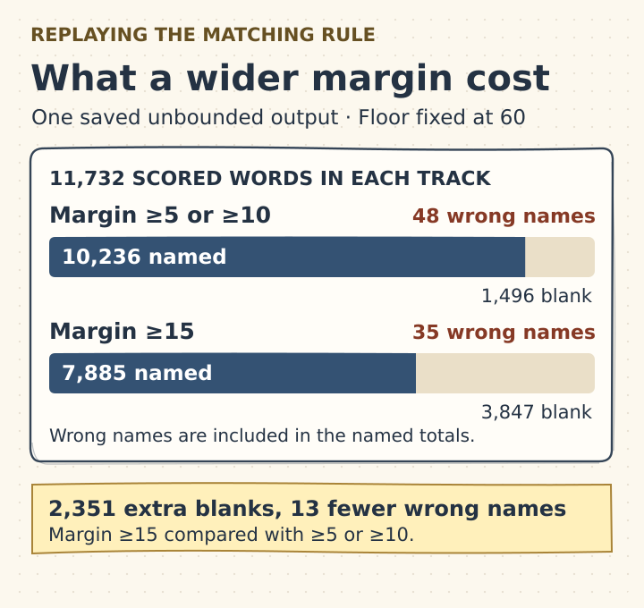
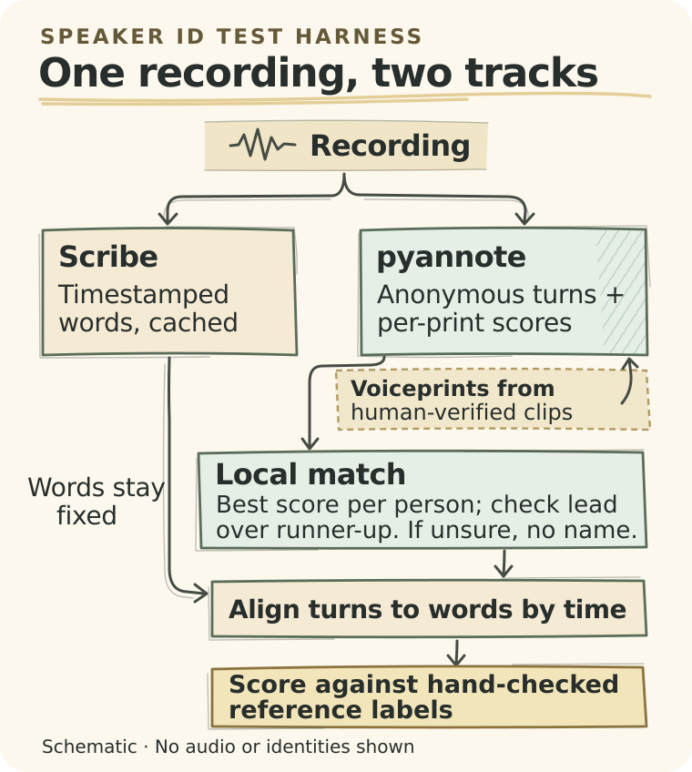

Speaker diarisation at my D&D table
How I built an evaluation to see who was getting the wrong name, and why giving the model more clues sometimes made it worse.
I started by comparing Scribe v2, Soniox and pyannote on our D&D recordings. I wanted to see which could keep track of who was speaking once everyone started talking over each other. Three of us at the table are brothers, which didn’t make it any easier.
Then there was the job of working out who Speaker 3 actually was. I could do that by hand, but I wanted to see if I could match the labels to people using a few clips of each of us. That’s what I ended up building the eval for.
How often did we get each other’s name?
Reconstructed speaker labels from my old recap system
Who spoke, and when?
The DM can be halfway through a line in character when one of us jumps in and somebody else starts answering them. On a room recording, those voices all land on the same track.
Remme and Tang found more speaker confusion in tabletop recordings than in the meeting recordings they tested. They looked at players changing their voices in character, which is a problem even when only one person is speaking.
The turns from the model give me timestamps and a label like Speaker 3. That part is diarisation. I used clips of the people at the table to put names to those turns, which is speaker identification.
The scores below come from a narrower test. I kept the words and timestamps from Scribe v2 fixed, including anything it misheard, and ran pyannote Precision-2 for the speaker turns. That let me check the names against the same words each time.
I looked up who was speaking at the midpoint of each word. Pyannote’s exclusive speaker timeline gives me at most one speaker at a time, so the whole word gets that name. Crosstalk can leave the word unnamed or put it under the wrong person.

How I checked the names
Each word already had a number in the cached transcript, so I used that as the key. For the first recording, I started from suggested speaker groups and listened back to correct the names. One review sheet flagged 117 turns where two runs disagreed and put the 14 biggest in front of me. Handy when I wanted a place to start listening; a poor way to pick a representative sample.
There were 13,027 words in the first transcript and 11,732 with a reference label I could score against. I left the remaining 1,295 out of the score. Once a word had a reference name, though, it stayed in the score even if a system chose to leave it blank.
The reference itself has a bias. Some of the labels came from listening to chunks pyannote had already grouped. If it slipped a few words from a second person into a group, it was easier to miss those words when I labelled the group as a whole. I’d use a separately annotated recording to check whether an apparent gain generalises.
Getting a useful voice sample
A voiceprint is a reference made from a short recording. The idea is to compare how people sound across different sentences. Two recordings of me saying the same thing won’t have identical waveforms. In a system like SpeechBrain’s ECAPA-TDNN, a model turns each clip into numbers called an embedding and compares the results. Pyannote gave me scores for its matches, which is what I used here.
The first samples weren’t as clean as I thought. One could be a few seconds of talking, a long silence, then a bit more talking, with another voice in the background. I wanted 30 seconds of speech rather than a 30-second clip. The next script used stretches from groups I’d checked by ear. It took segments at least two seconds long, aimed for 30 seconds of speech and skipped the voiceprint if it found less than eight seconds.
I cut those clips from the first recording, which I also scored. That makes the first result an in-session check. The second recording used the same prints, so its audio was separate from the enrolment clips.
I kept more than one voiceprint per person. That helped when the DM sounded quite different in character. For each person I kept their best score, then looked at the gap between the top two people. If my voiceprints come first and second, that doesn’t tell me whether my brother is close behind.
I tried a few settings. The rule in the comparisons below used a minimum score of 60 and asked for a lead of at least five points. A stricter check used a floor of 75, so 82 against 81 would still leave the name blank. Pyannote’s match score is a similarity signal; I didn’t interpret 90 as a 90% chance of being right.
Trying the same recording with and without a headcount
I sent the same recording to pyannote twice. One request said to look for six to eight speakers; the other let it work out the count. Both sets of speaker labels went onto the same Scribe words, so I could compare the names each pass gave each word.
I combined the results word by word. A name beat a blank. When the passes gave different names, the higher score won; a tie went to the pass with the speaker range.
The first time I tried that rule, 6.6% of the scored words got the wrong name. To check how repeatable that was, I sent the request with the six-to-eight range three more times. Each time I combined the new reply with the same saved reply from the request without a range. The recording, the words and my script stayed the same.
| Run | Wrong names | Wrong-name rate | Words given a name |
|---|---|---|---|
| No speaker range, on its own | 48 | 0.41% | 87.25% |
| New pass with range + saved pass (1) | 1,280 | 10.91% | 92.29% |
| New pass with range + saved pass (2) | 1,280 | 10.91% | 92.29% |
| New pass with range + saved pass (3) | 606 | 5.17% | 91.84% |
Some reference labels were checked by hand from groups the model had suggested. I repeated only the request with a speaker range, so this doesn’t tell me how much the pass without a range varies.
In two of the three tries, the run with the range mixed two of us into one group. The best scores for three different people were 90, 85 and 82. The five-point lead let the name through. The open-count run had also scored its answer at 90, and my tie rule overrode 584 names that the open-count run had got right.
word_index 137
reference Speaker B
no_range Speaker B 90
with_range Speaker A 90
selected Speaker A exact tie
scored correct → wrongThe recording with a guest
On a second recording, I carried over the same voiceprints. There was someone there I hadn’t made a print for. I tried a range of seven to nine speakers and got 820 words from that person assigned to other people. With the count left open, the system could leave that voice unnamed.
That’s the setting I’d rather have when somebody joins the table without a voiceprint. I’d leave an unfamiliar voice unnamed and let the person checking the transcript decide. There’s a note in the methods about what I could and couldn’t verify when I checked this recording again.
How much would I leave blank?
I took the saved open-count response from the first recording and changed just the rule for accepting a name. The minimum score stayed at 60. I raised the gap needed between the top two people. No new audio went to the model for this check.

Five points and ten points gave the same answers. At fifteen, I got rid of 13 wrong names, but I also lost 2,338 names the system had got right. I was rejecting whole groups of speech at a time, so I didn’t get a smooth trade-off. At our table I’d rather review the few suspect groups than lose that much of the transcript.
I also gave the original combined result to a language model and asked it to fill the blanks. In one case it picked up a clue about a character voice from the words. Filling the gaps across the whole recording brought coverage up to 99.7% and raised the wrong-name rate from 6.6% to 10.5%. I’d use it for suggestions I can check.
What I’d change on the next recording
If I can get a separate mic track for each person, I’d save those tracks before mixing. At a physical table I’d start by checking whether I can make out the quietest person while someone nearer the mic is speaking. I didn’t compare microphones here. This eval only sees the words Scribe produced, so it can’t count any it missed.
For the next test I’d keep one recording aside and label it before looking at predictions. I’d keep a row for each person and a column for the names they were given, including a blank column. That would show me whether I’ve got better at telling us apart or whether I’ve just stopped naming one of us.
Methods, caveats and full score tables
Rebuilding the baseline
The first recording had 13,027 indexed Scribe words. The final reference file uses half-open spans: a row with start 42 and end 43 labels word 42 only. I joined the final labels to the saved production turn table. The rebuild gave 2,895 wrong names; the original scorecard reported 2,903. The word indices weren’t all covered by the surviving turn table, so I use the rebuild for pair counts and the original scorecard for the baseline in the table below. The older reference in the HTML report assigns 1,591 words to one brother; the final reference assigns 786. The pair figures use the final file.
Across the three of us, the rebuilt baseline assigned 652 of 5,179 scored words to the wrong brother. The saved open-count run did that five times and left 837 of those words blank.
Other checks I tried
I gave Scribe’s anonymous speaker groups the best possible mapping to people after the fact and got 74.2% speaker-label accuracy in that check. I couldn’t see a difference from its speaker-library setting in my setup. In a separate pyannote run, its chosen print scored around 34 while another scored around 90. That’s why I used the returned score list to rank the candidates locally instead of taking the selected name as given.
Original scorecard and repeat calls
The first recording used 11,732 reference-labelled words for these comparisons. Some reference labels were informed by earlier pyannote clusters, and the surviving materials don’t establish exactly which scored words were in the first recording’s enrolment clips. I’d use separately recorded clips and a blind reference for a vendor comparison.
| Run | Wrong-name rate | Coverage |
|---|---|---|
| Stored baseline | 24.7% | 100% |
| Earlier acoustic pass | 3.5% | 57.4% |
| Original combined pass | 6.6% | 93.3% |
| Combined pass + LLM gap-fill | 10.5% | 99.7% |
The raw speaker-turn responses for the original acoustic runs are missing. The reports grouped some results into display turns, which erases speaker changes inside a turn. I used the original scorecard for the historical acoustic numbers. To check repeatability I reused the audio after checking its hashes, recreated ten prints from the same reference clips, and sent the same request bodies. These are new responses for the same recordings. I could pin the model name, Precision-2, but not prove the hosted backend had stayed unchanged since the first calls.
The guest check
The original hard-tier check reported 99.2% named precision at 87.6% coverage on the second recording. The repeat gave 87.5% coverage on the recovered reference, which has 17,149 labelled words out of 19,719. That reference was built from the open-count result’s own clusters, excludes mixed or unreviewed material, and lacks earlier turn-level corrections. The repeat can’t independently confirm that precision figure. It does show what the two rules did with the guest-labelled cluster: the open-count response left all 987 words blank, while the combined output gave 877 of them someone else’s name. Those are separate counts from the original 820.
Reusing the eval
I’d version the audio hash, model name, request settings, saved word and turn responses, and reference revision together, subject to consent and retention limits. I’d also test for duplicate reference labels, invalid word IDs and timestamp gaps. An overlap-aware benchmark would need a rule for what to score when two people are speaking at once.

A separate embedding-based study of identical twins found they were harder to distinguish in its setup. I didn’t test why my brothers and I were confused, or isolate family resemblance from recording conditions.
Run the word-join example (synthetic Python)
Copy this into speaker_labels.py and run python3 speaker_labels.py. It starts from accepted names and scores on two fictional exclusive timelines, then projects, combines and scores them. No dependencies.
"""Fictional words and turns. No audio, API calls or dependencies."""
# Word index -> (start, end), in integer milliseconds.
words = {
137: (10420, 10680), # Midpoint 10550: the next turn starts here.
138: (11000, 11020),
139: (12010, 12030),
140: (13010, 13030), # Neither pass has a turn here.
141: (14010, 14030),
142: (15010, 15030), # No checked label, so do not score this word.
}
# (start, end, accepted name, match score). No overlapping turns in a pass;
# names have already passed the score floor and runner-up check.
with_range = [
(10400, 10550, "B", 90),
(10550, 10700, "A", 90),
(11000, 11100, "B", 80),
(14000, 14100, "A", 82),
(15000, 15100, "B", 85),
]
no_range = [
(10400, 10700, "B", 90),
(11000, 11100, "B", 88),
(12000, 12100, "A", 86),
(14000, 14100, "B", 91),
(15000, 15100, "A", 88),
]
reference = {137: "B", 138: "B", 139: "A", 140: "A", 141: "B"}
def project(word, turns):
midpoint = sum(word) / 2
return next(((name, score) for start, end, name, score in turns
if start <= midpoint < end), None)
def combine(ranged, open_count):
if ranged is None or open_count is None:
return ranged or open_count
# Agreement gives the same name either way. On a score tie, the
# old rule kept the result with the speaker-count range.
return ranged if ranged[0] == open_count[0] or ranged[1] >= open_count[1] else open_count
def score(predictions):
labels = [predictions[index] for index in reference]
named = sum(label is not None for label in labels)
correct = sum(predictions[index] == expected for index, expected in reference.items())
wrong = named - correct
total = len(reference)
return named / total, correct / named if named else None, wrong / total
ranged = {i: project(word, with_range) for i, word in words.items()}
open_count = {i: project(word, no_range) for i, word in words.items()}
combined = {i: combine(ranged[i], open_count[i]) for i in words}
names = lambda matches: {i: match[0] if match else None for i, match in matches.items()}
assert ranged[137] == ("A", 90) and open_count[137] == ("B", 90)
assert names(combined) == {137: "A", 138: "B", 139: "A", 140: None, 141: "B", 142: "A"}
assert score(names(open_count)) == (0.80, 1.00, 0.00)
assert score(names(combined)) == (0.80, 0.75, 0.20)
for title, matches in [("No range", open_count), ("Combined", combined)]:
coverage, precision, wrong_rate = score(names(matches))
print(f"{title}: coverage {coverage:.0%}, named precision {precision:.0%}, "
f"wrong-name rate {wrong_rate:.0%}")